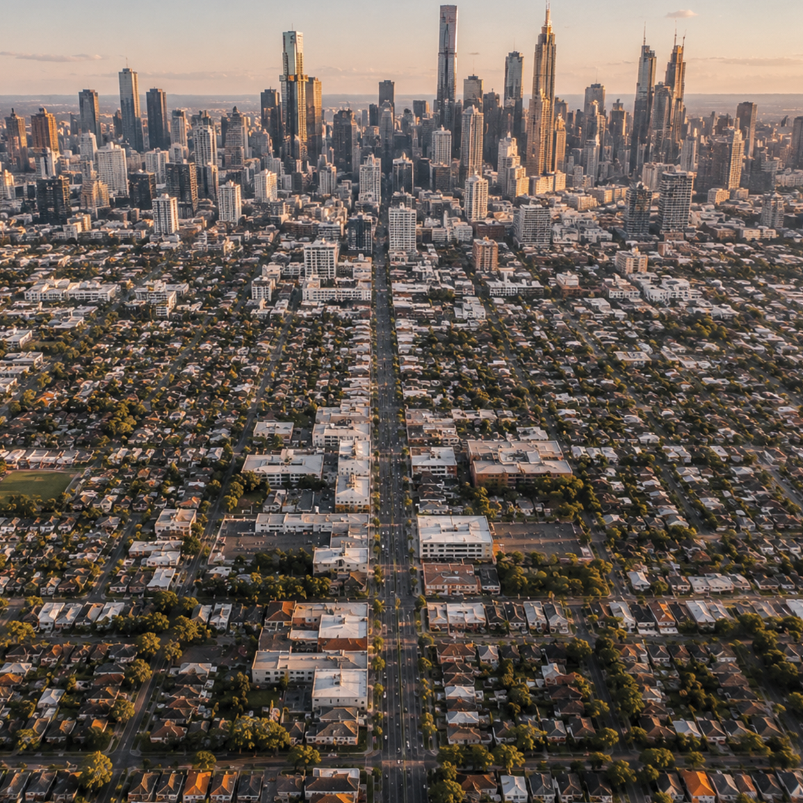

+5
The city spreads outward as a dense concentration of buildings, far more vertically and tightly packed than most urban centres in 1977. Skyscraper density has increased significantly, reshaping skylines into layered clusters of commercial and residential towers. At night, light pollution now dominates the view, with artificial illumination stretching far beyond the city core and making the urban footprint visible from great distances. Compared to 1977, the city is not only larger but more continuously active—an overgrown megacity system where infrastructure, population, and energy use are all intensified and operating around the clock, with very little of the dark, unlit space that once defined the edges of urban life.